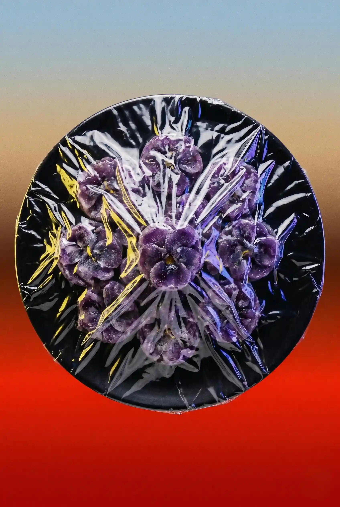

Violettes cristallisées
(bonbons),okjion
Ingredients
- Sucre
- Violette
- Sucre glace...
Après le ramassage des violettes qui a lieu en hiver et au debut du printemps, elles sont équeutées et trempées dans un sirop de sucre.
Après le ramassage des violettes qui a lieu en hiver et au debut du printemps, elles sont équeutées et trempées dans un sirop de sucre.
Après le ramassage des violettes qui a lieu en hiver et au debut du printemps, elles sont équeutées et trempées dans un sirop de sucre.
Après le ramassage des violettes qui a lieu en hiver et au debut du printemps, elles sont équeutées et trempées dans un sirop de sucre.
Après le ramassage des violettes qui a lieu en hiver et au debut du printemps, elles sont équeutées et trempées dans un sirop de sucre.
Après le ramassage des violettes qui a lieu en hiver et au debut du printemps, elles sont équeutées et trempées dans un sirop de sucre.
